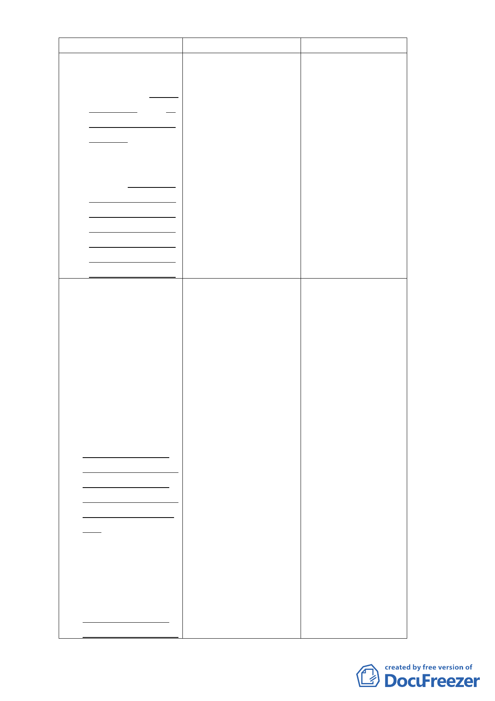

修訂內容
陸、開發處理原則：
三、基地條件：
（六）基地位於本府工務局
大地工程處編訂「臺
北市山坡地環境地質
資訊系統」中土地利
用潛力低及很低之地
區，以不得申請開發
為原則。但其建築面
積未達165 平方公尺
者，經專業技師評估
簽證並經臺北市都市
設計及土地使用開發
許可審議委員會審議
通過後，不在此限。
陸、開發處理原則：
五、原有不合規定之土地及
建築物使用：
既有合法建築物
不符前款規定時，仍得
繼續為原有合法之使
用，但不得申請變更為
營業使用。本計畫公告
實施後之既有不符本
計畫土地使用分區管
制規定之建築，應於
100年8月22日前提出
開發許可申請，都市設
計審議核備後半年內
申請建造執照，建造執
照取得後2年內建築完
成。未於期限內依規定
完成建造執照申請並
獲核准，將依相關法令
予以強制取締，並不得
再提出申請供營業使
用。另違建處理依照
「臺北市違章建築處
理規則」之規定辦理。
原計畫內容
陸、開發處理原則：
三、基地條件：
（六）基地位於本府產業
發展局編訂「臺北市
環境地質資料庫」中
土地利用潛力低及
很低之地區，以不得
申請開發為原則。
陸、開發處理原則：
五、原有不合規定之土地
及建築物使用：
既有合法建築物
不符前款規定時，仍
得繼續為原有合法之
使用，但不得申請變
更為營業使用。本計
畫公告實施後之既有
不符本計畫土地使用
分區管制規定之建
築，應於公告實施後
三年內完成申請建築
核准，核准後二年內
建築完成；未於期限
內依規定完成建造執
照申請並獲核准，將
依相關法令予以強制
取締，並不得再提出
申請供營業使用。另
違建處理依照「臺北
市違章建築處理要點
規定」針對民國84年
以後新產生違反該要
修訂理由
配合本府組織編制調
整，產業發展局山坡地
業務單位於99年1月28
日成立大地工程處。嗣
於101年1月18日，為強
化本市防災業務，改隸
工務局。
另「土地利用潛力低及
很低之地區不得申請
開發」係屬原則性規
定，故參考現行本市土
地使用分區管制自治
條例設置宗教建築及
特殊病院之規定，予以
彈性調整。
考量貓空地區多數店
家有土地權屬複雜、資
金不足之問題，辦理建
築設計、擬定水土保持
計畫、水源取得計畫及
地質鑽探等必要程序
需一定辦理時間，且3
年受理期間適逢貓空
纜車停駛1年半（97年
10月至99年3月），影
響店家生意及申請意
願，故依原計畫規定
「完成申請建築核准」
期限修訂為「受理開發
許可期限」（100年8月
22日），並管控取得建
造執照及開發建築期
限，以符實需。
另違建處理部分係依
本市違建處理要點而
為全市一致性之處
理，隨法令修訂而一併
調整，故刪除原都市計
畫所載條文規定。
-3-